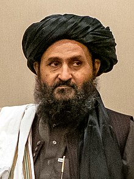

Abdul ghani

Abdul Ghani Baradar[a] (born 29 September 1963 or c.
1968; known by the honorific mullah) is an Afghan political and religious leader who is the acting first deputy prime minister alongside Abdul Salam Hanafi and Abdul Kabir, of Afghanistan.
The co-founder of the Taliban along with Mullah Omar, he was Omar's top deputy from 2002 to 2010,
and since 2019 he has been the Taliban's fourth-in-command,
as the third of Leader Hibatullah Akhundzada's three deputies.
He held senior positions in the Taliban during their first rule from 1996 to 2001.
After the Taliban government fell to the US-led invasion in 2001, he rose to lead the organization's Quetta Shura in Pakistan,
becoming the de facto leader of the Taliban. He was imprisoned by Pakistan in 2010, possibly because he had been discussing a peace deal with the Afghan government secretly,
without the involvement of Pakistan. He was released in 2018 at the request of the United States and was subsequently
appointed a deputy leader of the Taliban and head of their political office in Qatar.
Following the Taliban victory in August 2021, he returned to Afghanistan and received his current government post.
Baradar is considered to be a moderate Taliban member.[9][10] U.S.
President Donald Trump co-signed the February 2020 Doha agreement with him that led to the full withdrawal of United States troops from Afghanistan.
After the agreement was signed, the Taliban launched a military offensive against the Afghan government on 15 August 2021,
while the U.S. withdrawal was still underway. On 15 September 2021, Baradar was listed on Time magazine as one of the "100 Most Influential People In 2021"
for his role in the Taliban's victory.[11][12]
Earli Life
Reports of his date and place of birth vary.
According to the United Nations Security Council Consolidated List,
he was born in about 1968 in the Yatimak village of Deh Rawood District in Uruzgan Province of the Kingdom of Afghanistan.
[13][14] However, identity documents have stated his year of birth as 1963,[15] or his date and place
of birth as 29 September 1963 in[16]
He is a Zirak[17] Durrani Pashtun of the Sadozai tribe, a sub-tribe of the Popalzai.
[18] According to Dutch journalist Bette Dam, he and Muhammed Omar became friends when they were teenagers.
[19] According to Newsweek, Omar and Baradar may be brothers-in-law via marriage to two sisters.
[20] Muhammed Omar the first leader of the Taliban, nicknamed him 'Baradar', which means 'brother'
,[19] or Mullah Brother.[21]